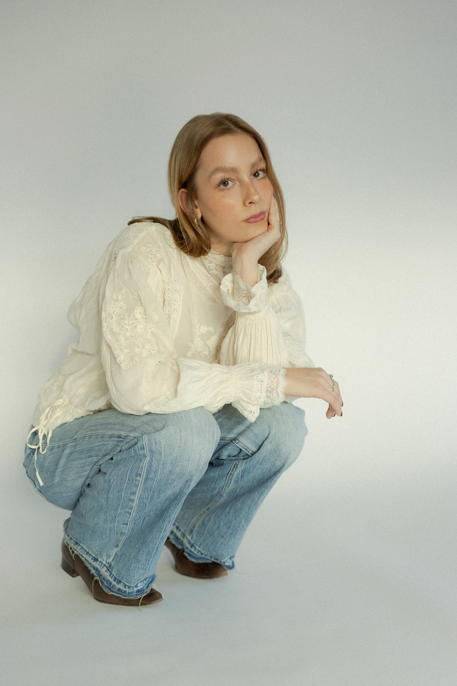

Ich heiße Emilia und bin Grafik- & Informationsdesign-Studentin im vierten Semester an der New Design University in St. Pölten.
Kunst hat für mich – früher oft eher im Unterbewusstsein – schon immer eine wichtige Rolle gespielt. Als visueller Mensch ist Design für mich nicht einfach nur schön anzusehen. Es hilft zu verstehen, dient als visuelle Stütze und wirkt gleichzeitig als starkes, eigenständiges Element.
Meine Passion ist es, über meine Kunst und mein Grafikdesign Gefühle zu vermitteln. Meine Arbeiten sollen sich stilistisch absetzen – und vor allem verstanden und gefühlt werden.
Auch die Illustration begleitet mich seit einigen Jahren, wobei meine wahre Leidenschaft dafür auf Reisen entstand. Das bewusste Innehalten, das genaue Beobachten eines Ortes und das Illustrieren direkt vor Ort wecken in mir eine aktive Bewunderung und Wertschätzung für Natur und Architektur.
Du bist an einer Zusammenarbeit oder einer Auftragsarbeit interessiert? :)
Melde dich sehr gerne hier bei mir: